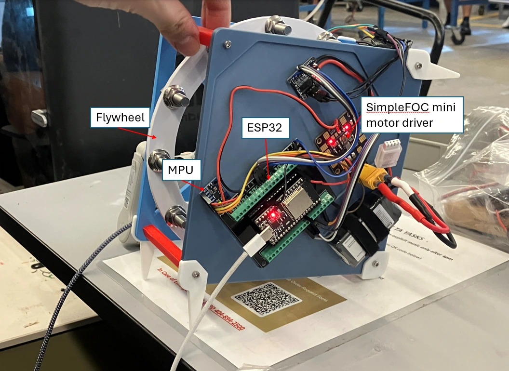
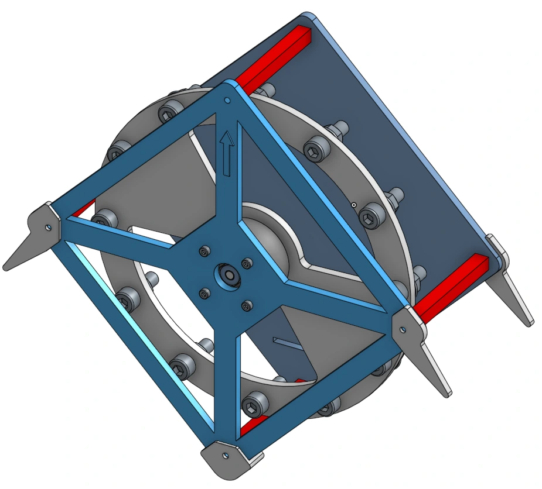
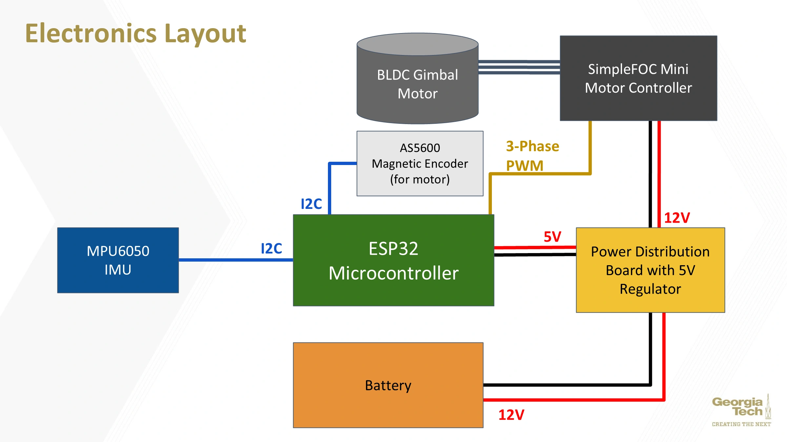
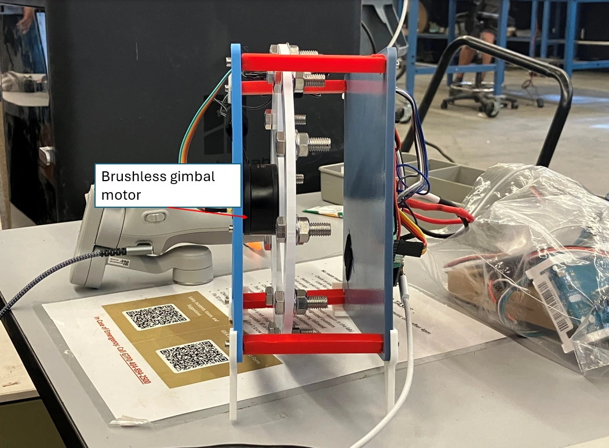
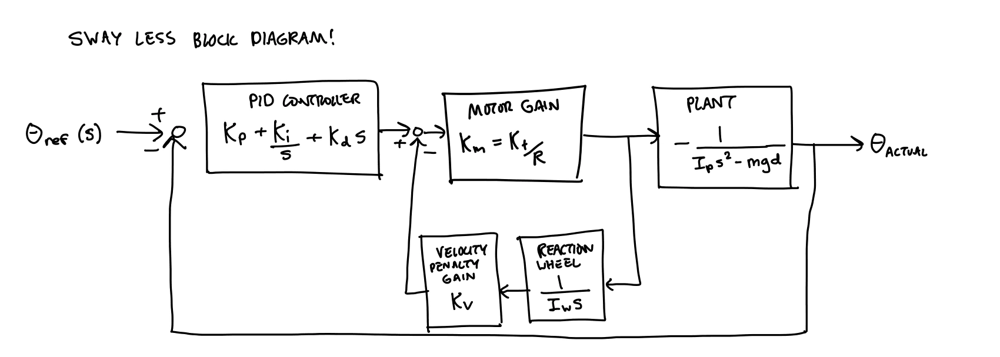
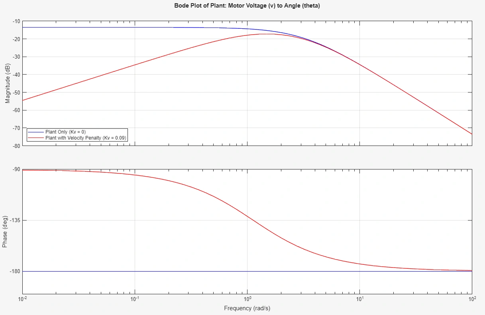
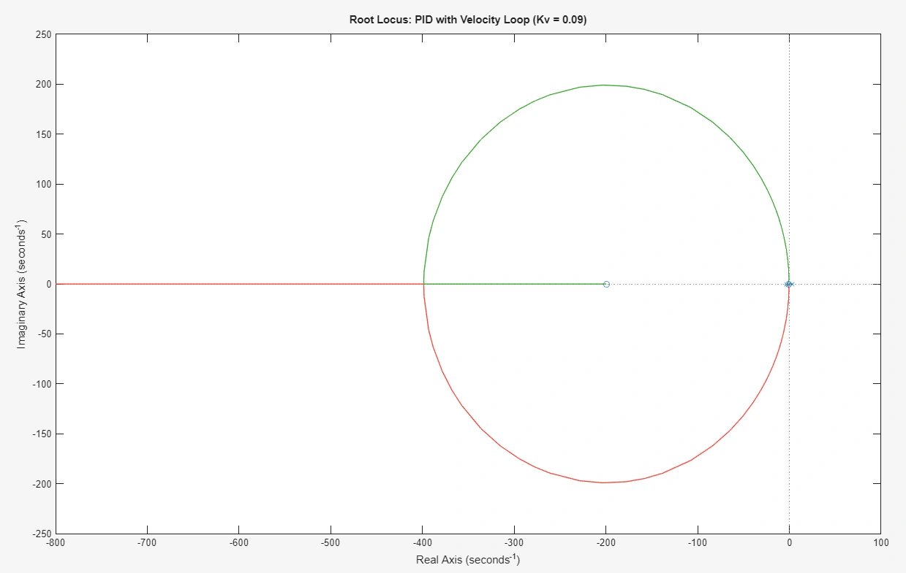
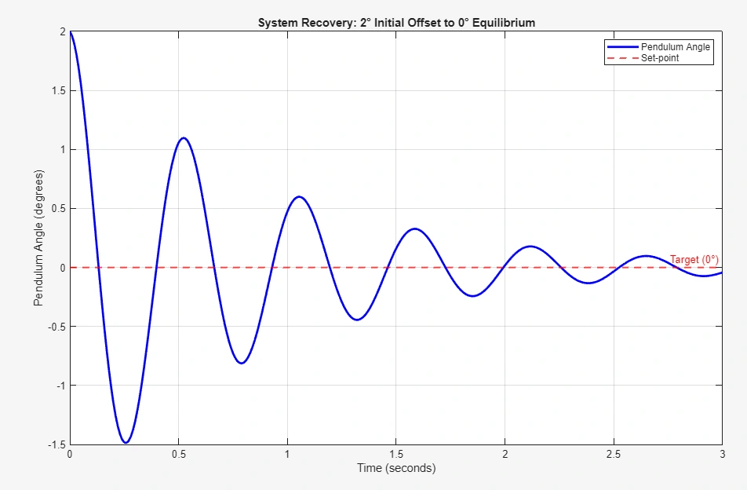

Sway Less reaction-wheel balancing system
A physical inverted pendulum with embedded feedback control


Overview
Our three-person team built Sway Less to explore balancing an inverted pendulum with a motor-driven reaction wheel. I worked on electronics, controller design, and mechanical assembly, connecting an ESP32, IMU, magnetic encoder, and BLDC motor driver into a closed-loop system.
We moved from Arduino to ESP32 and replaced the motor encoder to improve integration reliability. PID control with a wheel-speed penalty gave our best experimental response, but motor saturation and IMU noise limited sustained balance. The project connected a stable linear-model prediction with the constraints of real hardware.
Hardware and control





